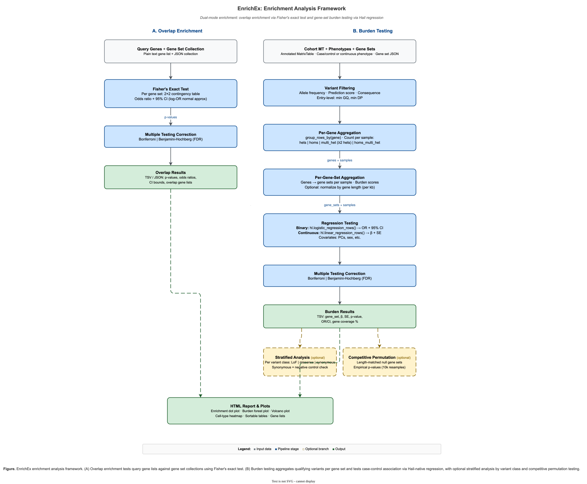

EnrichEx: Gene Set Enrichment and Burden Testing¶
EnrichEx is a module within hvantk that provides comprehensive tools for gene set enrichment analysis and burden testing. It enables cell-type enrichment analysis of gene lists and case-control burden testing with Hail-native regression for large-scale cohorts.

Figure 1. EnrichEx dual-mode framework — (A) Overlap enrichment via Fisher's exact test and (B) Burden testing via Hail regression with optional stratified and permutation branches.
Overview¶
The EnrichEx module implements two complementary analysis approaches:
Primary Functionality¶
Overlap Enrichment¶
- Fisher's Exact Test - Statistical testing of gene list enrichment in gene sets
- Cell-Type Analysis - Identify enriched cell types for gene lists (e.g., GWAS hits)
- Multiple Testing Correction - Bonferroni and Benjamini-Hochberg corrections
- Flexible Gene Sets - Support for custom gene set collections
Burden Testing¶
- Hail-Native Regression - Scalable logistic/linear regression for 100K+ samples
- Gene Set Burden - Aggregate rare variant burden across gene sets
- Multiple Models - Heterozygous, homozygous, and compound heterozygous models
- Variant Filtering - Comprehensive filters (AF, CADD, consequences, quality)
Key Features¶
Overlap Enrichment Features:¶
- Fast Computation - Fisher's exact test via Hail's optimized implementation
- Rich Results - Odds ratios, confidence intervals, overlapping genes
- Multiple Outputs - TSV, JSON, and pandas DataFrame formats
- Interpretable - Clear statistical significance with adjusted p-values
Burden Testing Features:¶
- Distributed Computing - Scales to 100K+ samples via Hail/Spark
- Flexible Genotype Models - Hets, homs, compound hets, or combined
- Phenotype Support - Binary (case/control) and continuous phenotypes
- Covariate Adjustment - Control for confounders (PCs, age, sex, etc.)
- Comprehensive Filtering - AF, CADD, VEP consequences, genotype quality
Interface Options¶
- CLI and Python API - Use via command-line interface or directly in Python scripts
Quick Start¶
Command-Line Interface¶
Overlap Enrichment¶
Test if your gene list is enriched in cell-type gene sets:
# Basic usage
hvantk enrichex overlap \
-g gwas_genes.txt \
-s brain_cell_types.json \
-o enrichment_results.tsv
# With specific correction method
hvantk enrichex overlap \
-g gwas_genes.txt \
-s brain_cell_types.json \
-o enrichment_results.tsv \
--correction benjamini-hochberg \
--alpha 0.01
Burden Testing¶
Test if cases have excess rare variants in gene set genes:
# Basic binary phenotype analysis
hvantk enrichex burden \
-m cohort.mt \
-p phenotypes.ht \
-s gene_sets.json \
-o burden_results.tsv
# With variant filters and covariates
hvantk enrichex burden \
-m cohort.mt \
-p phenotypes.ht \
-s gene_sets.json \
--max-af 0.001 \
--min-score 25 \
--consequences missense_variant,frameshift_variant \
--covariates PC1,PC2,PC3,PC4,PC5,age,sex \
-o burden_results.tsv
Python API¶
Overlap Enrichment¶
from hvantk.algorithms.enrichex import (
GeneSetCollection,
compute_overlap_enrichment_pandas
)
from hvantk.core.utils.hail_context import init_hail
# Initialize Hail
init_hail()
# Load gene sets
gene_sets = GeneSetCollection.load("brain_cell_types.json")
# Your gene list (e.g., from GWAS)
query_genes = ["APOE", "CLU", "CR1", "PICALM", "BIN1",
"ABCA7", "MS4A6A", "CD33", "TREM2"]
# Compute enrichment
results_df = compute_overlap_enrichment_pandas(
query_genes=query_genes,
gene_set_collection=gene_sets,
correction_method="benjamini-hochberg",
alpha=0.05
)
# View significant results
significant = results_df[results_df['significant']].sort_values('p_adjusted')
print(significant[['gene_set_name', 'odds_ratio', 'p_adjusted']])
Burden Testing¶
from hvantk.algorithms.enrichex import run_burden_analysis, VariantFilter
from hvantk.core.utils.hail_context import init_hail
import hail as hl
import json
# Initialize Hail
init_hail()
# Load data
mt = hl.read_matrix_table("cohort.mt")
phenotypes_ht = hl.read_table("phenotypes.ht")
# Load gene sets
with open("gene_sets.json") as f:
gene_sets = json.load(f)
# Run burden analysis
results_ht = run_burden_analysis(
cohort_mt=mt,
phenotype_ht=phenotypes_ht,
gene_sets=gene_sets,
phenotype_field="is_case",
phenotype_type="binary",
covariate_fields=["PC1", "PC2", "PC3", "PC4", "PC5", "age", "sex"],
variant_filter=VariantFilter(max_af=0.001, min_score=25.0, score_field="cadd_phred"),
genotype_aggregation="hets"
)
# Export results
results_ht.export("burden_results.tsv")
Visualization¶
EnrichEx ships with matplotlib-based plots. Generate visualizations using the --generate-report flag on the overlap and burden commands:
# Run overlap enrichment with report generation
hvantk enrichex overlap \
-g gwas_genes.txt \
-s brain_cell_types.json \
-o enrichment_results.tsv \
--generate-report
# Run burden testing with report generation
hvantk enrichex burden \
-m cohort.mt \
-p phenotypes.ht \
-s gene_sets.json \
-o burden_results.tsv \
--generate-report
The same functionality is available via Python:
import pandas as pd
from hvantk.algorithms.enrichex.plot import (
plot_enrichment_dotplot,
plot_enrichment_barplot,
plot_burden_forest,
)
enrichment_df = pd.read_csv("enrichment_results.tsv", sep="\t")
plot_enrichment_dotplot(
enrichment_df,
output_path="enrichment_dotplot.png",
top_n=25,
title="Cell-type enrichment for AD",
)
plot_enrichment_barplot(
enrichment_df,
output_path="enrichment_bars.png",
value="-log10_p",
top_n=15,
)
burden_df = pd.read_csv("burden_results.tsv", sep="\t")
plot_burden_forest(
burden_df,
output_path="burden_forest.pdf",
phenotype_type="binary",
title="Burden testing summary",
)
All plotting helpers return a matplotlib Figure, so you can further customize
the axes or save multiple formats as needed.
HTML Reports¶
HTML reports are generated using the --generate-report flag on the overlap and burden commands. Reports include inline plots and summary tables:
# Generate overlap enrichment with HTML report
hvantk enrichex overlap \
-g ad_gwas_genes.txt \
-s brain_cell_types.json \
-o enrichment_results.tsv \
--generate-report
# Generate burden test with HTML report
hvantk enrichex burden \
-m cohort.mt \
-p phenotypes.ht \
-s gene_sets.json \
-o burden_results.tsv \
--generate-report
Reports are saved alongside the output file with an .html extension.
From Python, the generate_report helper offers the same functionality:
from hvantk.algorithms.enrichex.report import generate_report
generate_report(
output_path="ad_enrichex_report.html",
overlap_results="enrichment_results.tsv",
burden_results="burden_results.tsv",
gene_sets_path="brain_cell_types.json",
title="Alzheimer's Disease EnrichEx Analysis",
description="Combined overlap + burden review",
analyst_name="Bioinformatics Core",
top_n=20,
include_gene_lists=True,
embed_static_plots=True,
)
Reports adhere to the CSS+HTML design outlined in the planning document: no external dependencies, a single HTML file, and inline PNG/SVG assets when embedding is enabled.
Synthetic Example Workflow¶
A complete synthetic dataset (overlap, burden, and gene set JSON) lives under
hvantk/tests/enrichex/testdata/ so you can exercise the plotting + report
pipeline without reaching for large real inputs. Run the example scripts:
# Run overlap enrichment with synthetic data
python examples/enrichex/overlap_enrichment_example.py
# Run burden analysis with synthetic data
python examples/enrichex/burden_analysis_example.py
# Create gene set collections from various formats
python examples/enrichex/create_gene_sets_example.py
When running in headless or sandboxed environments, set MPLBACKEND=Agg and
MPLCONFIGDIR to a writable directory to suppress font-cache warnings.
Use Cases¶
Use Case 1: GWAS Gene Prioritization¶
Scenario: You have 50 GWAS significant genes for Alzheimer's disease. Are they enriched in specific brain cell types?
# Prepare gene list
echo -e "APOE\nCLU\nCR1\nPICALM\nBIN1\nABCA7\nMS4A6A\nCD33\nTREM2" > ad_gwas_genes.txt
# Test enrichment in brain cell types
hvantk enrichex overlap \
-g ad_gwas_genes.txt \
-s brain_cell_type_markers.json \
-o ad_enrichment.tsv \
--correction benjamini-hochberg
# Expected result: Microglia enrichment
# (TREM2, CD33, MS4A6A are microglia genes)
Interpretation: - Significant microglia enrichment suggests immune pathway involvement - Guides follow-up functional studies in microglia - Prioritizes cell-type specific drug targets
Use Case 2: Case-Control Burden Analysis¶
Scenario: Test if Alzheimer's cases have excess rare variants in microglia genes.
# Run burden test for microglia gene set
hvantk enrichex burden \
-m alzheimers_cohort.mt \
-p phenotypes.ht \
-s brain_cell_types.json \
--phenotype-field is_case \
--phenotype-type binary \
--max-af 0.001 \
--min-score 25 \
--consequences missense_variant,frameshift_variant,stop_gained \
--genotype-aggregation hets \
--covariates PC1,PC2,PC3,PC4,PC5,age,sex \
-o ad_burden.tsv
Interpretation: - OR > 1 and p < 0.05 for microglia → Cases have more rare variants in microglia genes - Complements GWAS findings with rare variant evidence - Identifies specific genes contributing to burden
Use Case 3: Rare Variant Interpretation¶
Scenario: You sequenced a patient with autism and found 3 rare variants in excitatory neuron genes. Is this enrichment significant?
# Extract patient's rare variants
echo -e "SYNGAP1\nSHANK3\nSCN2A" > patient_genes.txt
# Test enrichment
hvantk enrichex overlap \
-g patient_genes.txt \
-s brain_cell_types.json \
-o patient_enrichment.tsv
# Check if excitatory neurons are enriched
Use Case 4: Multi-Phenotype Burden Testing¶
Scenario: Test gene set burden across multiple neurological disorders.
from hvantk.algorithms.enrichex import run_burden_analysis, VariantFilter
import hail as hl
# Load cohort with multiple phenotypes
mt = hl.read_matrix_table("neuro_cohort.mt")
phenotype_ht = hl.read_table("phenotypes.ht")
# Gene sets
gene_sets = {
"microglia": ["TREM2", "CD33", "MS4A6A", ...],
"excitatory_neurons": ["GRIN2A", "GRIN2B", "SYNGAP1", ...],
"oligodendrocytes": ["MOG", "MBP", "PLP1", ...]
}
# Test each phenotype
for pheno in ["alzheimers", "parkinsons", "schizophrenia"]:
results_ht = run_burden_analysis(
cohort_mt=mt,
phenotype_ht=phenotype_ht,
gene_sets=gene_sets,
phenotype_field=pheno,
phenotype_type="binary",
covariate_fields=["PC1", "PC2", "PC3", "age", "sex"],
variant_filter=VariantFilter(max_af=0.001, min_score=25.0, score_field="cadd_phred"),
)
results_ht.export(f"{pheno}_burden.tsv")
Gene Set Format¶
EnrichEx uses JSON format for gene set collections:
JSON Format¶
{
"background_genes": [
"GENE1", "GENE2", "GENE3", ...
],
"gene_sets": {
"Microglia": {
"name": "Microglia",
"genes": ["TREM2", "CD33", "MS4A6A", "TYROBP", "CSF1R"],
"source": "Lake et al. 2018",
"metadata": {
"tissue": "brain",
"technology": "snRNA-seq",
"species": "human"
}
},
"Excitatory_Neurons": {
"name": "Excitatory Neurons",
"genes": ["SLC17A7", "CAMK2A", "GRIN2A", "GRIN2B"],
"source": "Lake et al. 2018"
}
},
"source_description": "Brain cell-type markers from snRNA-seq",
"metadata": {
"reference": "Lake et al. Nature Biotechnology 2018",
"pmid": "29227469"
}
}
Creating Gene Sets from TSV¶
from hvantk.algorithms.enrichex import GeneSetCollection, load_marker_genes
# Load from TSV file (columns: gene, cell_type, score)
gene_sets = load_marker_genes(
marker_file="cell_type_markers.tsv",
gene_column="gene",
cluster_column="cell_type",
)
# Save as JSON
gene_sets.save("cell_type_markers.json")
Creating Gene Sets Manually¶
from hvantk.algorithms.enrichex import GeneSet, GeneSetCollection
# Define individual gene sets
microglia = GeneSet(
name="Microglia",
genes={"TREM2", "CD33", "MS4A6A", "TYROBP", "CSF1R"},
source="Lake et al. 2018"
)
excitatory = GeneSet(
name="Excitatory_Neurons",
genes={"SLC17A7", "CAMK2A", "GRIN2A", "GRIN2B"},
source="Lake et al. 2018"
)
# Create collection
gene_set_collection = GeneSetCollection(
gene_sets={"Microglia": microglia, "Excitatory_Neurons": excitatory},
background_genes=set(["TREM2", "CD33", "MS4A6A", ...]), # All genes
source_description="Brain cell-type markers"
)
# Save to file
gene_set_collection.save("brain_markers.json")
From Custom Gene Panels (CLI)¶
For plain text gene panels (e.g., from spreadsheet exports or lab lists),
use the hvantk genesets prepare command:
# Basic: convert two-column TSV to GeneSetCollection JSON
hvantk genesets prepare -i panels.tsv -o panels.json
# With HGNC validation and alias resolution
hvantk genesets prepare -i panels.tsv -o panels.json --hgnc /data/hgnc.ht
# With minimum gene set size and explicit background
hvantk genesets prepare -i panels.tsv -o panels.json \
--hgnc /data/hgnc.ht --min-genes 5 --background protein_coding_genes.txt
Input format: headerless two-column TSV (gene_set_name<TAB>gene_symbol),
one gene per line. Only HGNC human gene symbols are accepted.
The output JSON is directly compatible with hvantk enrichex burden -s
and hvantk enrichex overlap -s.
Detailed Usage¶
Overlap Enrichment¶
Input: Gene List¶
Gene lists can be provided in two formats:
Option 1: Text file (one gene per line)¶
Option 2: Comma-separated list¶
hvantk enrichex overlap \
--gene-list "APOE,CLU,CR1,PICALM,BIN1" \
-s gene_sets.json \
-o results.tsv
Gene Identifiers¶
- Use consistent gene identifiers (symbols or Ensembl IDs)
- Gene sets and query list must use same ID system
- Case-sensitive matching
Multiple Testing Correction¶
# Bonferroni correction (conservative)
hvantk enrichex overlap ... --correction bonferroni
# Benjamini-Hochberg (FDR control, default)
hvantk enrichex overlap ... --correction benjamini-hochberg
# No correction
hvantk enrichex overlap ... --correction none
Significance Threshold¶
# Default: alpha = 0.05
hvantk enrichex overlap ... --alpha 0.05
# Stricter threshold
hvantk enrichex overlap ... --alpha 0.01
# More permissive
hvantk enrichex overlap ... --alpha 0.10
Output Formats¶
# TSV output (default)
hvantk enrichex overlap ... -o results.tsv
# JSON output
hvantk enrichex overlap ... -o results.json --output-format json
# Both formats
hvantk enrichex overlap ... -o results --output-format tsv,json
Burden Testing¶
Variant Filtering¶
Allele Frequency Filtering:
# Rare variants only (AF < 0.1%)
hvantk enrichex burden ... --max-af 0.001
# Ultra-rare (AF < 0.01%)
hvantk enrichex burden ... --max-af 0.0001
# Common variants (no AF filter)
hvantk enrichex burden ... --max-af 1.0
CADD Score Filtering:
# High CADD scores (likely deleterious)
hvantk enrichex burden ... --min-score 25
# Very high CADD
hvantk enrichex burden ... --min-score 30
# No CADD filter
hvantk enrichex burden ... --min-score 0
Consequence Filtering:
# Loss-of-function variants
hvantk enrichex burden \
... \
--consequences frameshift_variant,stop_gained,splice_acceptor_variant,splice_donor_variant
# Missense + LoF
hvantk enrichex burden \
... \
--consequences missense_variant,frameshift_variant,stop_gained
# All coding variants
hvantk enrichex burden \
... \
--consequences missense_variant,synonymous_variant,frameshift_variant,stop_gained
Genotype quality filtering is not done here. EnrichEx assumes a pre-filtered
MatrixTable: genotype QC (GQ/DP thresholds), sample QC and variant QC are upstream
concerns, applied before the cohort reaches burden. Use hvantk hgc filter-qc, or
filter the MatrixTable yourself:
Genotype Aggregation Methods¶
Heterozygous model (default):
hvantk enrichex burden ... --genotype-aggregation hets
# Counts genes with >=1 heterozygous variant per sample
Homozygous model:
hvantk enrichex burden ... --genotype-aggregation homs
# Counts genes with >=1 homozygous variant per sample
Compound heterozygous model:
hvantk enrichex burden ... --genotype-aggregation chets
# Counts genes with >=2 heterozygous variants per sample
Combined recessive model:
hvantk enrichex burden ... --genotype-aggregation homs_chets
# Counts genes with homs OR compound hets per sample
Phenotype Types¶
Binary phenotype (case/control):
hvantk enrichex burden \
-m cohort.mt \
-p phenotypes.ht \
-s gene_sets.json \
--phenotype-field is_case \
--phenotype-type binary \
-o results.tsv
Output includes odds ratios and confidence intervals.
Continuous phenotype:
hvantk enrichex burden \
-m cohort.mt \
-p phenotypes.ht \
-s gene_sets.json \
--phenotype-field cognitive_score \
--phenotype-type continuous \
-o results.tsv
Output includes beta coefficients and t-statistics.
Covariate Adjustment¶
# Adjust for population structure
hvantk enrichex burden ... --covariates PC1,PC2,PC3,PC4,PC5
# Add age and sex
hvantk enrichex burden ... --covariates PC1,PC2,PC3,PC4,PC5,age,sex
# Custom covariates
hvantk enrichex burden ... --covariates PC1,PC2,PC3,batch,bmi
Covariates must be present in the phenotype table.
Sample Filtering¶
# Filter to specific samples via phenotype table
# Example: Only include samples with QC pass
# In Python:
phenotypes_ht = hl.read_table("phenotypes.ht")
phenotypes_ht = phenotypes_ht.filter(phenotypes_ht.qc_pass)
phenotypes_ht.write("phenotypes_filtered.ht", overwrite=True)
# Then use in CLI:
hvantk enrichex burden -p phenotypes_filtered.ht ...
Dry Run Mode¶
Preview analysis without running:
hvantk enrichex burden \
-m cohort.mt \
-p phenotypes.ht \
-s gene_sets.json \
-o results.tsv \
--dry-run
# Output shows:
# - Sample counts
# - Gene set sizes
# - Variant filter criteria
# - Phenotype info
# - Covariate list
Output Files¶
Overlap Enrichment Output¶
TSV Format¶
gene_set_name\tn_query\tn_gene_set\tn_overlap\tn_background\tp_value\todds_ratio\tci_lower\tci_upper\tp_adjusted\tsignificant\toverlap_genes
Microglia\t9\t150\t5\t20000\t0.0001\t15.2\t4.5\t48.3\t0.002\tTrue\tTREM2;CD33;MS4A6A;TYROBP;CSF1R
Excitatory_Neurons\t9\t500\t2\t20000\t0.45\t1.2\t0.3\t4.8\t0.60\tFalse\tGRIN2A;SLC17A7
Columns:
- gene_set_name: Gene set / cell type name
- n_query: Number of query genes in background
- n_gene_set: Number of gene set genes in background
- n_overlap: Number of overlapping genes
- n_background: Total background genes
- p_value: Raw p-value from Fisher's exact test
- odds_ratio: Enrichment odds ratio
- ci_lower, ci_upper: 95% confidence interval
- p_adjusted: Multiple testing corrected p-value
- significant: TRUE if p_adjusted < alpha
- overlap_genes: Semicolon-separated list of overlapping genes
JSON Format¶
{
"results": [
{
"gene_set_name": "Microglia",
"n_query": 9,
"n_gene_set": 150,
"n_overlap": 5,
"n_background": 20000,
"p_value": 0.0001,
"odds_ratio": 15.2,
"ci_lower": 4.5,
"ci_upper": 48.3,
"p_adjusted": 0.002,
"significant": true,
"overlap_genes": ["TREM2", "CD33", "MS4A6A", "TYROBP", "CSF1R"]
}
]
}
Burden Testing Output¶
Binary Phenotype (Logistic Regression)¶
gene_set_name\tbeta\tstandard_error\tz_stat\tp_value\todds_ratio\tci_lower\tci_upper\tp_adjusted\tsignificant
Microglia\t0.45\t0.12\t3.75\t0.0002\t1.57\t1.24\t1.98\t0.004\tTrue
Excitatory_Neurons\t0.08\t0.10\t0.80\t0.42\t1.08\t0.89\t1.31\t0.60\tFalse
Columns:
- gene_set_name: Gene set / cell type name
- beta: Regression coefficient
- standard_error: Standard error of beta
- z_stat: Z-statistic
- p_value: Raw p-value
- odds_ratio: exp(beta), effect size
- ci_lower, ci_upper: 95% confidence interval for OR
- p_adjusted: Multiple testing corrected p-value
- significant: TRUE if p_adjusted < alpha
Continuous Phenotype (Linear Regression)¶
gene_set_name\tbeta\tstandard_error\tt_stat\tp_value\tp_adjusted\tsignificant
Microglia\t2.35\t0.65\t3.62\t0.0003\t0.006\tTrue
Excitatory_Neurons\t0.42\t0.58\t0.72\t0.47\t0.70\tFalse
Columns:
- gene_set_name: Gene set / cell type name
- beta: Regression coefficient (effect on phenotype)
- standard_error: Standard error of beta
- t_stat: T-statistic
- p_value: Raw p-value
- p_adjusted: Multiple testing corrected p-value
- significant: TRUE if p_adjusted < alpha
Python API Reference¶
Core Data Structures¶
GeneSet¶
Represents a single gene set:
from hvantk.algorithms.enrichex import GeneSet
gene_set = GeneSet(
name="Microglia",
genes={"TREM2", "CD33", "MS4A6A", "TYROBP"},
source="Lake et al. 2018",
metadata={"tissue": "brain", "technology": "snRNA-seq"}
)
# Properties
print(gene_set.name) # "Microglia"
print(gene_set.n_genes) # 4
print(gene_set.genes) # {"TREM2", "CD33", "MS4A6A", "TYROBP"}
GeneSetCollection¶
Collection of gene sets:
from hvantk.algorithms.enrichex import GeneSetCollection
# Load from JSON
gene_sets = GeneSetCollection.load("brain_markers.json")
# Properties
print(len(gene_sets)) # Number of gene sets
print(gene_sets.background_genes) # Set of all background genes
print(gene_sets.source_description) # Description
# Iterate over gene sets
for gene_set in gene_sets:
print(f"{gene_set.name}: {gene_set.n_genes} genes")
# Access specific gene set
microglia = gene_sets.gene_sets["Microglia"]
# Save to JSON
gene_sets.save("output.json")
# Convert to dict
data = gene_sets.to_dict()
Overlap Enrichment Functions¶
compute_overlap_enrichment()¶
Compute enrichment with Hail objects:
from hvantk.algorithms.enrichex import compute_overlap_enrichment, OverlapResult
from typing import List
results: List[OverlapResult] = compute_overlap_enrichment(
query_genes=["APOE", "CLU", "CR1"],
gene_set_collection=gene_sets,
correction_method="benjamini-hochberg" # or "bonferroni", "none"
)
# Access results
for result in results:
if result.significant:
print(f"{result.gene_set_name}: OR={result.odds_ratio:.2f}, "
f"p={result.p_adjusted:.2e}")
compute_overlap_enrichment_pandas()¶
Compute enrichment with pandas DataFrame output:
from hvantk.algorithms.enrichex import compute_overlap_enrichment_pandas
import pandas as pd
results_df: pd.DataFrame = compute_overlap_enrichment_pandas(
query_genes=["APOE", "CLU", "CR1"],
gene_set_collection=gene_sets,
correction_method="benjamini-hochberg",
alpha=0.05
)
# Filter significant results
significant = results_df[results_df['significant']].sort_values('p_adjusted')
# Export to file
results_df.to_csv("enrichment_results.tsv", sep="\t", index=False)
Burden Testing Functions¶
run_burden_analysis()¶
Complete burden analysis pipeline:
from hvantk.algorithms.enrichex import run_burden_analysis, VariantFilter
import hail as hl
results_ht = run_burden_analysis(
cohort_mt=hl.read_matrix_table("cohort.mt"),
phenotype_ht=hl.read_table("phenotypes.ht"),
gene_sets={
"Microglia": ["TREM2", "CD33", "MS4A6A"],
"Excitatory": ["GRIN2A", "GRIN2B", "SLC17A7"]
},
phenotype_field="is_case",
phenotype_type="binary", # or "continuous"
covariate_fields=["PC1", "PC2", "PC3", "age", "sex"],
variant_filter=VariantFilter(
max_af=0.001,
min_score=25.0,
consequences=["missense_variant", "frameshift_variant"],
score_field="cadd_phred",
),
genotype_aggregation="hets", # or "homs", "chets", "homs_chets"
gene_field="SYMBOL"
)
# Export results
results_ht.export("burden_results.tsv")
# Or convert to pandas
results_df = results_ht.to_pandas()
compute_geneset_burden_mt()¶
Low-level burden computation (for custom workflows):
from hvantk.algorithms.enrichex import compute_geneset_burden_mt, VariantFilter
import hail as hl
# Compute burden matrix
burden_mt = compute_geneset_burden_mt(
mt=hl.read_matrix_table("cohort.mt"),
gene_sets={
"Microglia": ["TREM2", "CD33", "MS4A6A"],
"Excitatory": ["GRIN2A", "GRIN2B"]
},
gene_field="SYMBOL",
variant_filter=VariantFilter(
max_af=0.001,
min_score=25.0,
consequences=["missense_variant", "frameshift_variant"],
score_field="cadd_phred",
),
genotype_aggregation="hets"
)
# burden_mt has:
# - Rows: gene sets
# - Cols: samples
# - Entry: burden (integer count)
# Annotate with phenotypes and run custom analysis
burden_mt = burden_mt.annotate_cols(**phenotypes_ht[burden_mt.col_key])
# ... custom downstream analysis
logistic_burden_test() and linear_burden_test()¶
Run regression on burden matrix:
from hvantk.algorithms.enrichex import logistic_burden_test, linear_burden_test
import hail as hl
# For binary phenotypes
results_ht = logistic_burden_test(
mt_burden=burden_mt,
phenotype_field="is_case",
covariates=["PC1", "PC2", "PC3", "age", "sex"],
pass_through=["gene_set_name"]
)
# For continuous phenotypes
results_ht = linear_burden_test(
mt_burden=burden_mt,
phenotype_field="cognitive_score",
covariates=["PC1", "PC2", "PC3", "age", "sex"],
pass_through=["gene_set_name"]
)
Utility Functions¶
load_marker_genes()¶
Load gene sets from TSV marker file:
from hvantk.algorithms.enrichex import load_marker_genes
gene_sets = load_marker_genes(
marker_file="seurat_markers.tsv",
gene_column="gene",
cluster_column="cluster",
)
gene_sets.save("markers.json")
apply_correction()¶
Apply multiple testing correction to p-values:
from hvantk.algorithms.enrichex import apply_correction
import numpy as np
p_values = np.array([0.001, 0.05, 0.10, 0.20])
# Benjamini-Hochberg
p_adjusted_bh = apply_correction(p_values, method="benjamini-hochberg")
# Bonferroni
p_adjusted_bonf = apply_correction(p_values, method="bonferroni")
# No correction
p_adjusted_none = apply_correction(p_values, method="none")
Interpreting Results¶
Overlap Enrichment¶
Odds Ratio¶
The odds ratio (OR) quantifies enrichment strength:
| OR Range | Interpretation |
|---|---|
| OR > 10 | Very strong enrichment |
| OR 5-10 | Strong enrichment |
| OR 2-5 | Moderate enrichment |
| OR 1-2 | Weak enrichment |
| OR = 1 | No enrichment |
| OR < 1 | Depletion |
Example:
Interpretation: Query genes are 15x more likely to be microglia genes than expected by chance. Highly significant (p=0.002).Confidence Intervals¶
95% CI provides uncertainty estimate:
- Wide intervals indicate high uncertainty (often due to small sample size)
- If CI includes 1.0, enrichment is not significant
P-values¶
p_value: Raw p-value from Fisher's exact testp_adjusted: Multiple testing corrected p-value (use this for interpretation)significant: TRUE if p_adjusted < alpha threshold
Reporting: "Query genes showed significant enrichment in Microglia (OR=15.2, 95% CI [4.5-48.3], FDR-adjusted p=0.002)."
Burden Testing¶
Binary Phenotype (Case/Control)¶
Odds Ratio Interpretation:
| OR | Effect | Interpretation |
|---|---|---|
| OR = 2.0 | Risk factor | Cases have 2x more burden than controls |
| OR = 1.0 | No effect | Equal burden in cases and controls |
| OR = 0.5 | Protective | Cases have 50% less burden than controls |
Example:
Interpretation: - Cases have 57% more rare variants in microglia genes compared to controls - Each additional rare variant in microglia genes increases AD risk by 57% - Highly significant (p=0.0002)
Statistical Significance: - p < 0.001: Very strong evidence - p < 0.01: Strong evidence - p < 0.05: Moderate evidence - p > 0.05: No significant evidence
Continuous Phenotypes¶
Beta Coefficient Interpretation:
Interpretation: - Each additional rare variant in microglia genes increases cognitive score by 2.35 points - Positive beta: Higher burden → higher phenotype value - Negative beta: Higher burden → lower phenotype value - Highly significant (p=0.0003)
Effect Size: - Interpret beta in context of phenotype scale - Large beta with small SE indicates precise estimate - Report effect size with units: "2.35 points per variant"
Best Practices¶
Gene Set Construction¶
- Use tissue-relevant gene sets
- Brain cell types for neurological disorders
- Immune cell types for autoimmune diseases
-
Match tissue to disease context
-
Define clear backgrounds
- Use all genes expressed in tissue
- Match to variant calling strategy
-
Typically 15,000-20,000 protein-coding genes
-
Quality control gene sets
- Minimum 20 genes per set
- Maximum 500 genes per set
-
Remove low-confidence markers
-
Use multiple sources
- Single-cell RNA-seq marker genes
- Pathway databases (MSigDB, Reactome)
- Literature-curated gene lists
Sample Size Requirements¶
Overlap Enrichment: - Minimum 10 query genes recommended - At least 5 query genes in background - Gene sets with 20-500 genes work best
Burden Testing: - Minimum 100 samples per group (case/control) - At least 10 samples with burden per gene set - Power increases with sample size and effect size
Variant Filtering Strategy¶
Conservative filters (high confidence):
Use for: Rare disease studies, high-penetrance variantsModerate filters (balanced):
Use for: Complex diseases, general burden testingPermissive filters (exploratory):
Use for: Exploratory analyses, large cohortsCovariate Selection¶
Always include: - Population structure: PC1-PC5 (from ancestry PCA) - Basic demographics: age, sex
Consider including: - Technical covariates: batch, sequencing center - Clinical covariates: disease subtypes, medications - Quantitative traits: BMI, blood biomarkers
Avoid: - Colliders: Variables affected by both burden and phenotype - Mediators: Variables on causal pathway - Too many covariates: Risk of overfitting (< 1 covariate per 10 samples)
Multiple Testing Considerations¶
- Use appropriate correction:
- Benjamini-Hochberg (FDR): Good for exploratory analyses
-
Bonferroni: Use for confirmatory testing or small number of tests
-
Report both raw and adjusted p-values:
-
Consider two-stage testing:
- Discovery cohort (FDR 0.05)
-
Replication cohort (Bonferroni correction)
-
Pre-specify hypotheses when possible:
- Reduces multiple testing burden
- Increases statistical power
Troubleshooting¶
Common Issues¶
Issue: "No overlapping genes between query and background"¶
Solution: Check gene identifier consistency
- Ensure query and gene sets use same ID system (symbol vs Ensembl)
- Check for case sensitivity
- Verify gene names are current (not outdated aliases)
Issue: "Gene set has no variants passing filters"¶
Solution: Relax variant filters or check annotations
hvantk enrichex burden ... --max-af 0.01 --min-score 15
Or verify VEP annotations are present:
- Check consequence field exists
- Verify CADD scores are annotated
Issue: "MatrixTable column key mismatch"¶
Solution: Ensure sample IDs match between MT and phenotype table
# Check column keys
mt.col_key.dtype # Should match phenotype table key
phenotypes_ht.key.dtype
# Rekey if needed
mt = mt.key_cols_by(s=hl.str(mt.s))
Issue: "Warning: Low sample count for gene set"¶
Solution: This is informational
- < 10 samples with burden may reduce power
- Consider combining related gene sets
- Use more permissive filters to increase burden carriers
Issue: "Regression did not converge"¶
Solution: Check for issues:
1. Complete separation (all cases or all controls have burden)
2. Very low burden counts
3. Too many covariates
4. Covariate collinearity
Try:
- Remove correlated covariates
- Combine small gene sets
- Use different genotype aggregation method
Performance Optimization¶
For large cohorts (>50K samples):
-
Use Spark cluster:
-
Filter variants early:
-
Checkpoint intermediate results:
-
Test subset first:
For many gene sets (>100):
-
Split into batches:
-
Use parquet for results:
See Installation for setup, Contributing for development workflow.